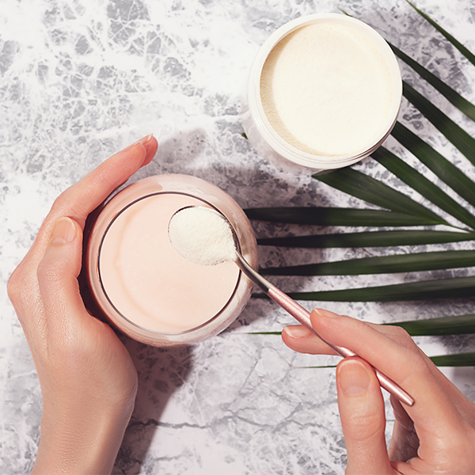

Бразильский коллаген производится в соответствии с международными стандартами качества и проверяется на наличие тяжелых металлов, пестицидов и
микробиологических загрязнений. Качество бразильского коллагена высоко ценится на международном рынке. Бразильский коллаген считается одним из лучших благодаря высокой степени очистки.

Форма выпуска
Жидкий, желеобразный и порошок. Наиболее удобная — порошок, на основе которого готовятся напитки. Для этого берется нужная порция, рекомендованная производителем, и вода. Основу порошкообразной формы продукта. Азенуа составляет
гидролизованный коллаген: благодаря низкой молекулярной массе, коллагеновый пептид не образует геля и легко растворяется в холодной воде, не имеет запаха и вкуса.
Он легче усваивается и имеет бо́льшую эффективность по сравнению с обычным коллагеном.
Гидролизованные желатиновые продукты признаны безопасными Управлением по контролю качества пищевых продуктов и медикаментов (FDA)[1].
Качество гидролиза
Важный фактор, который определяет эффективность продукта. Чтобы действовать в глубоких слоях кожи, гидролизованный коллаген должен попасть в кровоток, пересекая кишечный барьер. И качество гидролиза имеет здесь большое значение.
Различные гидролизаты коллагена отличаются множеством параметров. А чтобы получить высокоэффективный для здоровья кожи и костей гидролизат, содержащий большое количество полезных веществ, необходимы высокие технологии и очень
качественное, дорогое сырье. Различные гидролизаты коллагена отличаются множеством параметров (распределением молекулярного веса пептидов, их последовательностью аминокислот и др.).
А чтобы получить высокоэффективный для здоровья кожи и костей гидролизат, содержащий большое количество полезных веществ, необходимы высокие технологии и очень качественное, дорогое сырье.
Среди существующих способов получения белковых гидролизатов наиболее перспективным является ферментативный гидролиз. Его особенностью, в отличие от химических способов, является проведение
гидролиза при температуре 35-50 градусов С и атмосферном давлении.
При этом не происходит разрушение аминокислот и их рацемизация (превращение с помощью тепла или химической реакции активного соединения в неактивную форму, содержащую «убитый» белок)[6].
Гидролизованный коллаген в продукте Азенуа произведен способом ферментативного гидролиза.